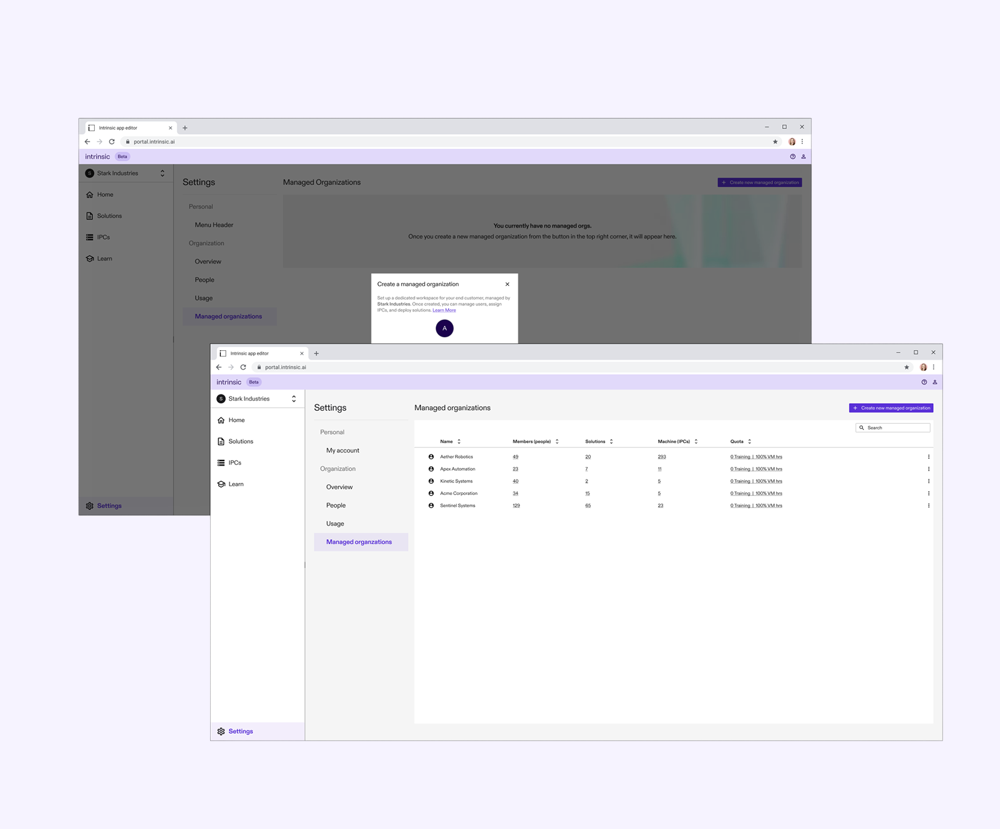
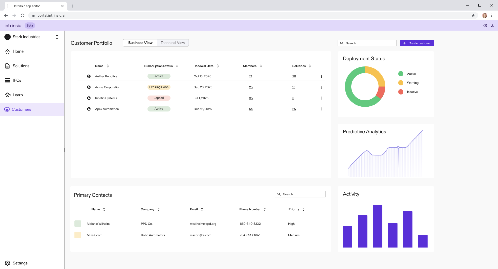

A 0→1 product engagement at Intrinsic (Alphabet's robotics company, formerly Google X). Replacing a manual, CLI-driven org provisioning workflow with a self-serve UI that lets Solution Builders independently set up and manage end-customer organizations in Flowstate.

[ FIG.01 · MVP DASHBOARD ] CONFIDENTIAL · INTRINSIC 2025Flowstate is Intrinsic's robotics deployment platform. Solution Builders (SBs) — the system integrators who deploy robot solutions for industrial end customers — needed a way to spin up new End Customer (EC) organizations for every deployment.
The existing process required SBs to be granted an orgCreator role, then run inctl commands by hand. In practice, almost no SB used the CLI. Instead, they emailed an Account Executive every time they needed a new org. The AE became the bottleneck.
I led the PRD end-to-end — stakeholder interviews, scope definition, dependency mapping, and rollout planning. The biggest unlock was framing the work around the SB's actual lifecycle with a customer, not the backend topology.
Through reviews with engineering, design, marketing, and legal, the MVP collapsed to three pillars — sized so we could ship a working dev-environment deployment by the end of the engagement.
SB admins enter org name, location, and admin contact through Flowstate UI. Org ID auto-generated. Email-based onboarding kicks off automatically. No more inctl, no more AE ticket.
Must Haveb/430293288SBs invite EC users by email and assign a role — Admin or Developer for the MVP. View, modify, and remove users with corresponding backend updates and email triggers.
Must Haveb/430293246Centralized "Managed Organizations" dashboard. Org switcher, list view with key info, deletion flow with explicit confirmation. Foundation for future IPC + billing features.
Must Haveb/430293566The main reason an SB creates an EC org is when they're actively thinking about deploying a solution. Everything else is noise. — PRD assumption · validated in research

[ FIG · Managed Organizations dashboard ]The redesigned flow folds three previously-disconnected steps — provisioning, inviting users, and lifecycle management — into one continuous SB experience inside Flowstate.
inctl commands to provisionEnd-to-end walkthrough of the MVP shipped at the close of the engagement: creating an EC org, inviting users, switching contexts, and managing lifecycle from the dashboard.
I owned the work from problem framing to dev-environment deployment, partnering with engineering, design, and UXR. Here's how the milestones landed against the plan.
I co-ran a rapid usability study with our UXR partner, testing the Figma prototype against three real tasks: create an EC org, add users + assign roles, and manage / delete an existing org.
A deliberate mix to cross-cut role and product familiarity — three external partners from Trinity & Trumpf (General Manager, Service Tech, Domain Architect across NA and EU) and three internal Customer Solutions Engineers who broker the manual workflow today. Five of six had hands-on Flowstate fluency; one didn't. Coverage across NA (5) and EU (1) — important for surfacing the GDPR signal we found.
Users immediately flagged the single-user invite as a major bottleneck. Onboarding a customer felt disjointed; bulk operations were table stakes for this audience.
When you create a new organization… that is going to be a cumbersome step to add one [person at a time]. You may want some bulk editing mechanism, right? — P4 · Internal CSE
Solution Builders questioned the purpose of EC-specific user roles when they'd been told ECs would not actually use the platform. The role-permission UI was undermined by a missing strategic narrative about who the EC is and what they need.
My instinct is to just select the 'Developer' checkbox. But what's the actual difference between selecting only 'Developer' versus selecting both 'Developer' and 'Viewer'? It's not clear what is included. — P6 · Internal CSE
Unprompted, partners asked for commercial controls — subscription expiry, renewal, reactivation — directly inside the Managed Organizations dashboard. The feature was being asked to evolve from tooling into a business mission control.
I would want to be able to manage their subscription from within here. I would want to be able to see when's their expiration date… and reactivate their subscription for next year. — P1 · External Partner
The research showed a partner's company context — geography, size, business model — was a stronger predictor of needs than their formal role. A feature critical to a European partner (GDPR-driven data deletion) was a non-issue for a US partner. We surfaced a missing business leader persona focused on commercial management.
Beyond the strategic insights, the study surfaced concrete UI improvements we fed directly into the build. The five highest-impact ones:
5 of 6 users had to be prompted to read the org-switcher tooltip before discovering the create action. Users expected a prominent button or "+" affordance.
Fix · Reposition CTAP0Single name + location wasn't enough for partners managing customers with multiple sites. Need sub-locations or internal tags.
Fix · Form fieldsP1Users expected to add a team in one motion — paste a list of emails, pick roles, send. The one-at-a-time pattern read as broken, not minimal.
Fix · Bulk inviteP0Partners expected selecting "Admin" to imply lower-level permissions automatically. Independent checkboxes for each role created confusion.
Fix · Role hierarchyP1Co-locating personal account and org controls was high-stakes confusion. Multiple users feared deleting their own account when they meant to delete a managed org.
Fix · Separate menusP0Legal counsel confirmed Intrinsic's incentive is customer return, not aggressive deletion. The "Delete" confirmation needed to surface the 30-day archive window explicitly.
Fix · Confirm copyP0Deleting all the data from my customer is not allowed in Europe because the data belongs to the customer. — P3 · External partner · EU
The MVP shipped to Intrinsic's development environment on schedule, validated against six real users, and laid the groundwork for the team's commercial roadmap.
The closing recommendation to leadership distilled the research into three sequenced bets — the path from "self-serve infrastructure" to "commercial mission control."
Subscription status, renewal dates, reactivation flows. The signal partners gave us — they already think of this surface as the place to manage customer commercial relationships. Lean in.
A dedicated UXR study to resolve the strategic disconnect. Until we know what ECs do in Flowstate, we can't build meaningful roles for them. Clarity here unblocks the entire user-management surface.
Bulk invites, separated Account vs. Org settings, hierarchical roles, granular org segmentation. The minimum to make "self-serve" feel actually self-serve at scale.